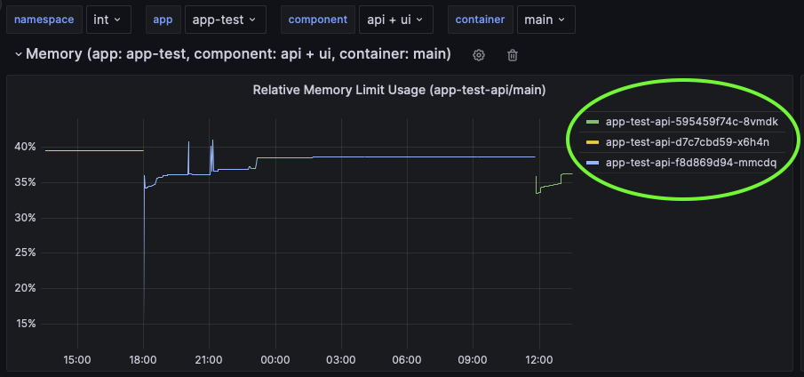

Table of Contents
Kubernetes
All your containers run in a Kubernetes cluster, maintained by the UNITY team. The following sections describe how you can get limited access to the cluster for various troubleshooting scenarios.
kubectl
To access the Kubernetes cluster, it is recommended to use kubectl. Follow the instructions to install kubectl for your operating system (Linux, MacOS, Windows).
Make sure you can run the following command locally.
kubectl version --client=true
The steps, to access the Kubernetes cluster are detailed next.
Authenticate as Service Account
To be able to interact with the cluster’s API server a token plus some additional config is required. In UNITY, for every app there is a service account, which is a technical identify, that can be used to interact with the cluster. The token is securely stored in GitHub Enterprise as repository secret.
Get Service Account Token
Downloading the token is possible using the store-secrets workflow in your app’s repository.

After the action has completed successfully, the secrets.kdbx file can be downloaded from the Summary > Artifacts section. This file can be opened later with the password provided when starting the workflow, and it will contain the secrets from the GitHub repository.
🚨 Note that the token may be rolled (new token is generated) by UNITY from time to time. Extracting the service account token is meant for development purposes and must not be used for external service interaction.

kubectl Setup
The secrets.kdbx contain three environment specific secrets to interact with the Kubernetes cluster. Export all three environment variables in a shell (fill in the actual values from the secrets.kdbx).
export KUBERNETES_HOST=...
export KUBERNETES_NAMESPACE=...
export KUBERNETES_TOKEN=...
Now you can interact with the clusters API server. Validate, by running:
kubectl --server "https://$KUBERNETES_HOST" --namespace "$KUBERNETES_NAMESPACE" --token "$KUBERNETES_TOKEN" version --client=false
This should output something like:
WARNING: This version information is deprecated and will be replaced with the output from kubectl version --short. Use --output=yaml|json to get the full version.
Client Version: version.Info{Major:"1", Minor:"26", GitVersion:"v1.26.1", GitCommit:"8f94681cd294aa8cfd3407b8191f6c70214973a4", GitTreeState:"clean", BuildDate:"2023-01-18T15:51:24Z", GoVersion:"go1.19.5", Compiler:"gc", Platform:"darwin/amd64"}
Kustomize Version: v4.5.7
Server Version: version.Info{Major:"1", Minor:"24", GitVersion:"v1.24.10", GitCommit:"5c1d2d4295f9b4eb12bfbf6429fdf989f2ca8a02", GitTreeState:"clean", BuildDate:"2023-01-27T22:54:20Z", GoVersion:"go1.19.5", Compiler:"gc", Platform:"linux/amd64"}
WARNING: version difference between client (1.26) and server (1.24) exceeds the supported minor version skew of +/-1
The last WARNIN: Gversion difference between client (1.26) and server (1.24)... indicates that the current version of kubectl may have some incompatibility with the server API.
You can go back and install the kubectl version that matches the cluster version. However, since the kubectl features that will be used are very basic, it is likely that picking a newer version of kubectl will not cause any problems.
For more information about kubectl consult the official documentation.
KUBECONFIG (Optional)
As the example call showed, it is possible to pass KUBERNETES_HOST, KUBERNETES_NAMESPACE, and KUBERNETES_TOKEN on every kubectl invocation. This is a bit cumbersome, thought, when running a lot of kubectl commands.
To make running kubectl more convenient, set a kubeconfig up as follows:
export "KUBECONFIG=~/.kube/config-$KUBERNETES_NAMESPACE"
kubectl config set-credentials sa --token "$KUBERNETES_TOKEN"
kubectl config set-cluster "$KUBERNETES_NAMESPACE" --server "https://$KUBERNETES_HOST"
kubectl config set-context "$KUBERNETES_NAMESPACE" --user sa --namespace "$KUBERNETES_NAMESPACE" --cluster "$KUBERNETES_NAMESPACE"
kubectl config use-context "$KUBERNETES_NAMESPACE"
As long as the KUBECONFIG environment variable is set, kubectl can be used without specifying --server ... on each call.
Test the setup by running
kubectl version --client=false
🚨 Note that the token is now stored inside a file (the path KUBECONFIG points to). To make sure the secret token is not leaked, delete the file after you are done with kubectl calls.
App Configuration
Assuming you have set the KUBECONFIG you can now inspect the current configuration of your app app-foo as follows:
kubectl get secret app-foo -oyaml
You can even modify the secret directly using kubectl edited secret app-foo, but then you should really know what you are doing, as changes will be directly reflected into your apps deployments. A misconfiguration may result in an unwanted downtime.
Note that the workflows in your app’s repository make use of the deploy-unity-app action, which uses kubectl and the service account to sync the unity-app.*.yaml into a Kubernetes secret.
Additionally, it checks if the image and tag/sha256 combination exists and if they correspond to each other. If sha256 parameter is not present it is added in the kubernetes secret.
Deployments
Assuming you have set the KUBECONFIG you can now inspect deployments for your app app-foo as follows:
kubectl get deployment app-foo-api -oyaml
kubectl get deployment app-foo-ui -oyaml
Note that the names of the deployments are concatenated from the app-name app-test and the deployment names api, ui from your unity-app.*.yaml.
deployments:
ui:
# ...
api:
# ...
You can also find the names of the deployments on the dashboards in Grafana.
Inspect Containers and Pods
Your containers run in pods, which is a Kubernetes concept. To interact with a running container, you need to interact with a pod.
Currently, it is not possible to find the pod names using kubectl
To find the current pod names check the dashboards in Grafana.
For example the resource dashboards show the pod names:

In the example above, the only pod that is currently available in the cluster for interactive inspection is app-test-api-595459f74c-8vmdk. The other two pods do not run anymore, as can be seen from the chart.
When knowing the pod name, various operations can be performed to help troubleshooting
Remote Shell
To open a remote shell in a running container follow the example below:
kubectl exec -it app-test-api-595459f74c-8vmdk -- sh
This opens a remote shell (like ssh) which allows to inspect the internal state of the container. E.g. list files in a temporary directly or show process info of the JVM.
sh-4.4$ jinfo 1
Java System Properties:
#Tue May 30 11:52:15 GMT 2023
java.specification.version=17
# ...
VM Flags:
-XX:AdaptiveSizePolicyWeight=90 -XX:CICompilerCount=2 -XX:+ExitOnOutOfMemoryError -XX:GCTimeRatio=4 -XX:InitialHeapSize=33554432 -XX:MaxHeapFreeRatio=20 -XX:MaxHeapSize=134217728 -XX:MaxNewSize=44564480 -XX:MinHeapDeltaBytes=524288 -XX:MinHeapFreeRatio=10 -XX:MinHeapSize=33554432 -XX:NewSize=11010048 -XX:NonNMethodCodeHeapSize=5826188 -XX:NonProfiledCodeHeapSize=122916026 -XX:OldSize=22544384 -XX:ProfiledCodeHeapSize=122916026 -XX:ReservedCodeCacheSize=251658240 -XX:+SegmentedCodeCache -XX:SoftMaxHeapSize=134217728 -XX:+UseCompressedClassPointers -XX:+UseCompressedOops -XX:+UseParallelGC
VM Arguments:
jvm_args: -Dquarkus.http.host=0.0.0.0 -Djava.util.logging.manager=org.jboss.logmanager.LogManager -Xms32m -Xmx128m -XX:+UseParallelGC -XX:MinHeapFreeRatio=10 -XX:MaxHeapFreeRatio=20 -XX:GCTimeRatio=4 -XX:AdaptiveSizePolicyWeight=90 -XX:+ExitOnOutOfMemoryError
java_command: /deployments/quarkus-run.jar
java_class_path (initial): /deployments/quarkus-run.jar
Launcher Type: SUN_STANDARD
🚨 You can even modify files and configuration, but keep in mind that all changes will be lost after the next pod is started. This is for troubleshooting and experiments only.
Port-Forwarding
To forward a port from a pod to your local machine you can map ports as shown below:
kubectl port-forward app-foo-api-5c484fd67c-9x9ll 8080:8080
If your app exposes that port to serve http requests, you should be able to open e.g. the Swagger UI page locally over the mapped port by opening http://localhost:8080/test/api/swagger-ui (after adjusting the URL).
Inspect Events
Sometimes it is useful to inspect the events from the Kubernetes cluster. The application service account token is authorized to list the events from the cluster:
kubectl get events
Container Runtime (Docker)
At the core of the Kubernetes cluster is a container runtime. Each Kubernetes cluster may have a different container runtime and configuration at its heart. Most settings are security related, and sometimes it can be hard to troubleshoot why a specific container is not running as intended. Here are a few guidelines on preparing and testing containers to run in UNITY:
- containers must not require privileged users to run e.g. root user and sudo commands will not work) Reference: Force the running image to run as a non-root user to ensure least privilege
- containers should run as user 10000 in group 10000 See UID (User Identifier) and GID (Group Identifier) in Linux for a quick explanation. A specific user, with uid > 10000, to run the container may be specified via
runAsUserin theunity-app.*.yaml. Reference: Run as a high-UID user to avoid conflicts with the host’s user table - By default, all capabilities are dropped. See An Introduction to Linux Capabilities for a quick overview. Specific capabilities, such as
NET_BIND_SERVICEmay be added via theunity-app.*.yaml. Reference: Drop all capabilities and add only those required to reduce syscall attack surface - The root filesystem of a container will be readonly. Temporary directories that the container requires write permission to should be specified as
tmpDirsin theunity-app.*.yaml. Reference: An immutable root filesystem can prevent malicious binaries being added to PATH and increase attack cost
To test a container locally, the following docker command gets quite close to the specifications above:
docker run --read-only --cap-drop ALL --user 10000:10000 my-image